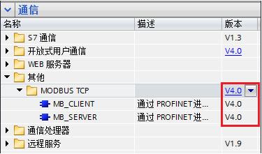
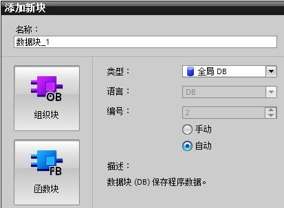
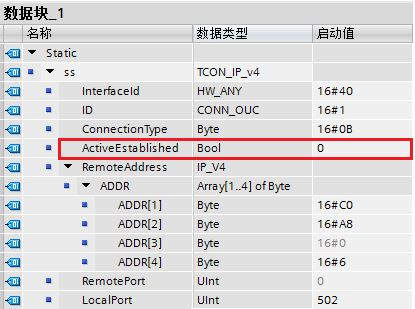
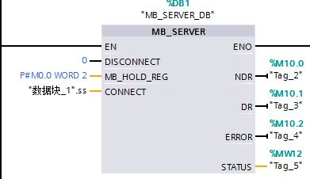
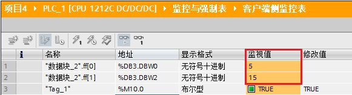

STEP 7 V13 SP1 软件版本中的 Modbus TCP 指令目前最新的版本已升至 V4.0，如图 1 所示。该版本的使用需要具备以下两个条件：
1. 软件版本： STEP 7 V13 SP1 及其以上
2. 固件版本： S7-1200 CPU 的固件版本 V4.1 及其以上

图1. Modbus TCP V4.0 版本指令块
V4.0 作为 Modbus TCP 新版指令的第一个基础版本，后续版本新增内容参见：
V4.0 版本 Modbus TCP 客户端文档参见链接。
旧版指令主要应用于固件版本 V4.0 及其以前的 CPU：
下面以两台 S7-1200 之间进行 Modbus TCP 通信为例，详细阐述客户端与服务器侧如何编程及通信的过程，本文档只介绍服务器部分组态编程，客户端部分参见链接。
表 1 列出了具体的实验环境，表 2 列出了双方 CPU 通信所需主要参数。
| 操作系统 | WIN7 SP1 专业版 64 位 |
编程软件 |
STEP 7 Professional V13 SP1 Update 5 |
系统硬件 |
|
表1. Modbus TCP 通信的实验环境
CPU类型 |
IP 地址 |
端口号 |
硬件标识符 |
|
客户端 |
CPU 1212C |
192.168.0.6 |
0 |
64 |
服务器 |
CPU 1215C |
192.168.0.4 |
502 |
64 |
表2. Modbus TCP 通信双方的基本配置
硬件标识符是在“设备组态”中，双击 PROFINET 接口，然后在“属性”中的“硬件标识符”中查看，如图 2 所示。
图 2. S7-1200 设备的 PROFINET 接口硬件标识符
“MB_SERVER”指令将处理 Modbus TCP 客户端的连接请求、接收并处理 Modbus 请求并发送响应。
1. 调用 MB_SERVER
将 MB_SERVER 指令块在“ 程序块 > OB1 ”中的程序段里调用，调用时会自动生成背景 DB ，点击确定即可，如图 3 所示。

图 3. 调用 MB_SERVER 指令块
该功能块各个引脚定义如表 3 所示：
| 参数 | 说明 |
| DISCONNET | 0（默认）：被动建立与客户端的通信连接；1：终止连接。 |
| MB_HOLD_REG | 指向 Modbus 保持寄存器的数据区。可以设为数据块或 M 存储区地址。数据块可以为优化的数据块，也可以为非优化的数据块。对于优化数据块只能是基本数据类型的数组。对于非优化的数据块没有要求，一般通过 P# 指针的形式输入。具体参见表 4。 |
| CONNECT | 指向连接描述结构的指针。使用 TCON_IP_v4 数据类型。 |
| NDR | 0：无新写入的数据；1：Modbus 客户端写入了新的数据。 |
| DR | 0：未读取数据；1： Modbus 客户端读取了数据 |
| ERROR | 错误位：0：无错误；1：出现错误，错误原因查看 STATUS。 |
| STATUS | 指令的详细状态信息。 |
表 3. MB_SERVER 各个引脚定义说明
Modbus TCP 服务器数据区定义，参见表 4。
| 地址区 | 定义 | 说明 |
|---|---|---|
| 输出位 | Q0.0 开始 |
|
| 输入位 | I0.0 开始 |
|
| 输入寄存器 | IW0 开始 |
|
| 保持寄存器 | 由 MB_HOLD_REG 定义 |
|
表 4. 数据区定义
 注意：数据区从指令库版本 V5.0 开始，可以自由定义，方法参见链接。
注意：数据区从指令库版本 V5.0 开始，可以自由定义，方法参见链接。
2. CONNECT 引脚的指针类型
第一步，先创建一个新的全局数据块 DB2，如图 4 所示：

图 4. 创建全局数据块
第二步，双击打开新生成的 DB2 数据块，定义变量名称为“ss"，数据类型为“TCON_IP_v4”（可以将 TCON_IP_v4 拷贝到该对话框中），然后点击“回车”按键。该数据类型结构创建完毕。如图 5 所示：

图 5. 创建 MB_SERVER 中的 TCP 连接结构的数据类型
各个参数定义说明如表 4 所示：
| 参数 | 说明 |
| InterfaceId | 网口硬件标识符，对于本体网口为 64，即16#40。 |
| ID | 连接 ID，取值范围 1~4095 |
| Connection Type | 连接类型。TCP 连接默认为：16#0B |
| ActiveEstablished | 建立连接。主动为 1（客户端），被动为 0（服务器）。 |
| ADDR | 服务器侧的 IP 地址 |
| RemotePort | 远程端口号 |
| LocalPort | 本地端口号 |
表4. TCON_IP_v4 数据结构的引脚定义
客户端侧的 IP 地址为 192.168.0.6，端口号为 0，所以 MB_SERVER 服务器侧该数据结构的各项值如图 6 所示。

图 6. MB_SERVER 服务器侧的 CONNECT 数据结构定义
注意：
3. S7-1200 服务器侧 MB_SERVER 编程
调用 MB_SERVER 指令块，实现被客户端读取 2 个保持寄存器的值，如图7所示。

图7. MB_SERVER 服务器侧编程
S7-1200 MODBUS TCP 服务器侧准备数据，用于客户端读访问，如图8所示。

图8. 服务器侧监控表
S7-1200 MODBUS TCP 客户端侧，给 MB_CLIENT 指令块中 REQ 引脚一个上升沿，监控数据读取成功。如图9所示。

图9. 客户端侧监控表